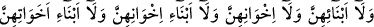

ALLAH,
HAKKI SÖYLEMEKTEN
ÇEKİNMEZ
53. Ey îman edenler! Siz, bir yemeğe çağırılmadıkça, zamanını gözetmeksizin,
Peygamber’in evlerine girmeyin. Ancak dâvet edildiğiniz vakit girin. Yemeği
yediğinizde hemen dağılın, sohbete dalmayın. Çünkü bu hareketiniz Peygamber’i
üzmekte, fakat o (size bunu söylemekten) utanmaktadır. Ama Allah, hakkı
söylemekten çekinmez. Peygamber’in hanımlarından bir şey istediğiniz zaman
perde arkasından isteyin. Bu, hem sizin kalpleriniz, hem de onların kalpleri için
daha temiz bir davranıştır. Sizin Allâh’ın Rasûlü’nü üzmeniz ve kendisinden sonra
onun hanımlarını nikâhlamanız asla caiz olamaz. Çünkü bu, Allah katında büyük
(bir günah)tır.
54. Bir şeyi açığa vursanız da, gizleseniz de şüphe yok ki Allah, her şeyi gâyet iyi
bilmektedir.
55. Onlara (Peygamber’in hanımlarına) babaları, oğulları, kardeşleri,
kardeşlerinin oğulları, kız kardeşlerinin oğulları, kadınları (mü’min kadınlar) ve
ellerinin altında bulunanlardan dolayı bir günah yoktur. (Ey Peygamber hanımları!)
Allah’tan korkun; şüphesiz Allah, her şeye şâhidtir.